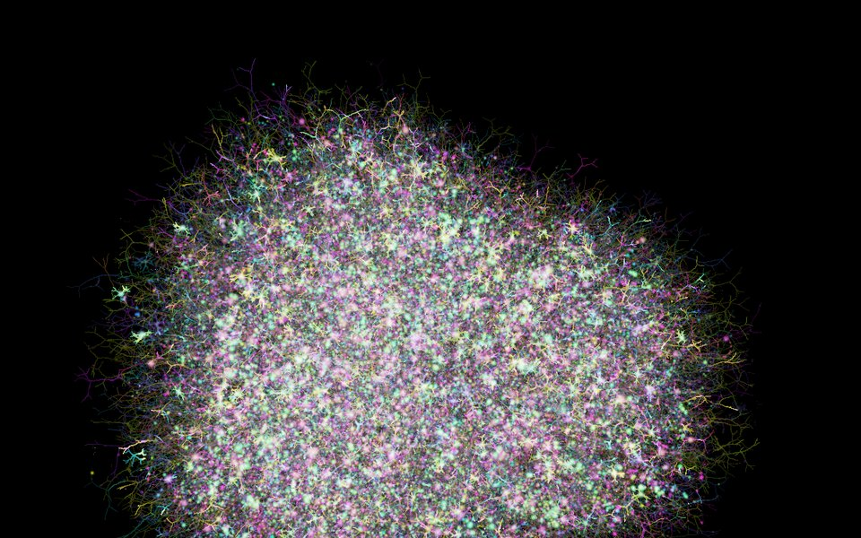
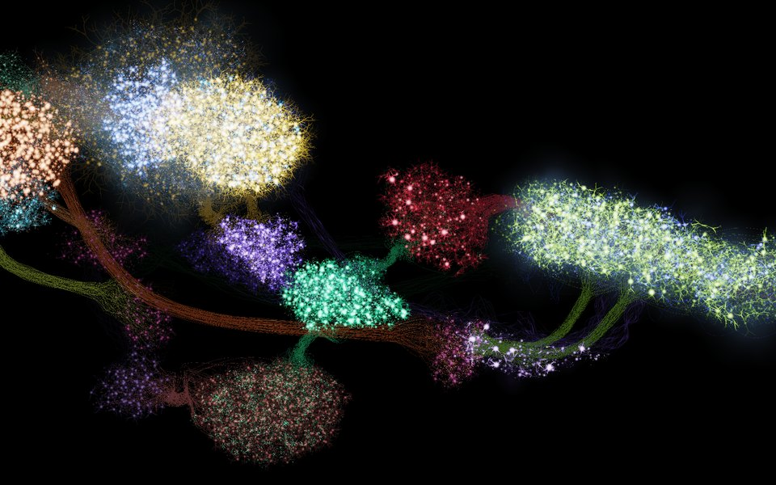
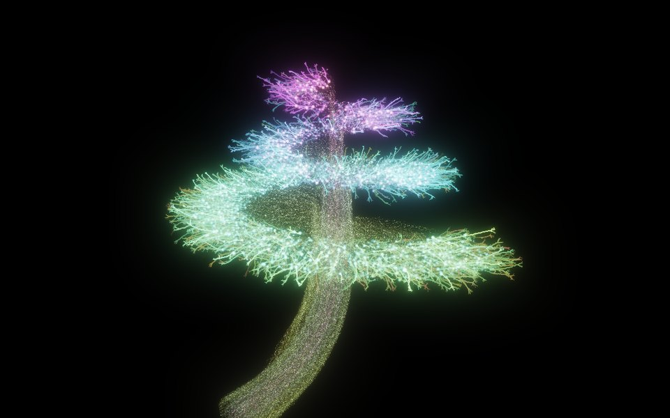
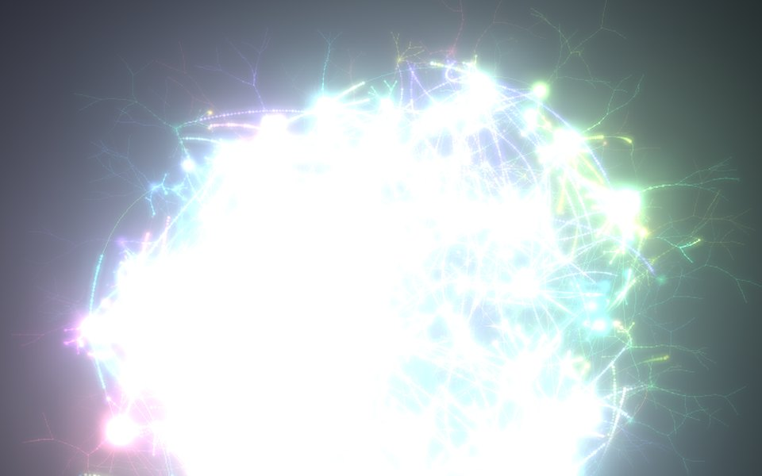

Four ways in
Cortex Garden and Cochlea Garden need a browser with WebGPU: a recent Chrome or Edge, or Firefox 141 or later on Windows. The original Dendrite Garden runs in any browser. Drag to orbit, scroll to zoom, and press H to hide the panels.

Cortex Garden
The main garden. Up to 100,000 Izhikevich neurons, each with a tree of electrical dendrites, wired only where an axon touches a dendrite. Synapses learn, consolidate, wither and sprout while you watch. Excite it with a brush, probe a cell, put it to sleep.
Open
The Tadpole
A whole little animal, built from groups of neurons with jobs. Touch it and it swims; feed it and it feeds; pair light with food and it learns. A labelled guide to every group, from every angle, with a wiring diagram.
Read the guide
Cochlea Garden
The inner ear as neurons. A spiral ganglion of 15,000 cells, each tuned to its own pitch, listens to test sounds, an audio file or your audio input, and fires along its nerve as the music plays.
Open
Dendrite Garden, the original
Where it began: a few hundred neurons with living dendrites, simulated on the CPU. Blooms, tori, phyllotaxis, fractal trees and mandalas, with sound.
OpenReal neurons, drawn as they think
Spiking cells
Izhikevich neurons in ten firing patterns, from regular spiking and bursting to chattering, fast-spiking and rebound.
Living dendrites
Up to 31 compartments per cell, with cable diffusion, NMDA plateaus and spikes travelling back up the tree.
Contact wiring
Axons grow first. A synapse can only form where an axon passes close to another cell's dendrite.
Learning
Short-term plasticity, STDP, consolidation from fluid to lasting weights, and structural rewiring.
Neuromodulators
Dopamine, noradrenaline, acetylcholine and serotonin, released by nuclei and drawn as coloured haze.
Circuits
Groups of neurons with jobs, wired by projections, so that behaviour emerges from spikes alone.